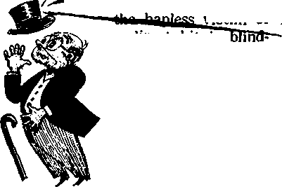

What Nope for Perplexed Humanity?
Pressures Toward Materialism
Nature’s Sharpshooters
The Overpowering Urge to Communicate
OCTOBER 22. A958
THE MISSION OF THIS JOURNAL
News sources that are able to keep you awake to the vital issues or our times must be Unfettered by censorship and fettfch interests. "AwaM” hat no fetters. It recognizes facts, faces facte, is free to publish facts. It is not bound by political ambitions or obligations; it is unhampered by advertisers whose toes must not be trodden on; it is unprejudiced by traditional creeds. This journal keeps itself free that it may speak freely to you. But it does not abuse its freedom. It maintains integrity to truth.
"Awake!" uses the regular news channels, but is not dependent an them. Its own correspondents are on all continents, in scores of nations. From the four corners of the earth their uncensored, on-the-scenes reports come to you through these columns. This journal's viewpoint is not narrow, but is international. It is read in many nations, in many languages, by persons of all ages. Through its pages many fields of knowledge pass in review—-government, commerce, religion, history, geography, science, social conditions, natural wonders—why, its coverage is as broad as the earth and os high as the heavens.
‘1 Awoke I” pledges itself to righteous principles, to exposing hidden foes and subtle dangers, to championing freedom far all, to comforting mourners and strengthening those disheartened by the failures of a delinquent world, reflecting sure hope for the establishment of a righteous New World.
Get acquainted with "Awoke!" Keep awoke by reading "Awake!"
Published Semimonthly by
WATCHTOWER BIBLE AND TRACT SOCIETY OF NEW YORK, INC.
117 Adams Street Brooklyn 1, N.Y,, U.S,A.
N.H.Kxom. President Grant Suiteb,
Printing this Issue: 2,800,000
Five cents a copy
"Aysb.r1' If b>MJsh»d Is th« foffowfnfl I# (afTfCiffw: S«Mimwtbly—Afrlkuns, Danish, Dutdi, English, Finnish, French. German., Greek, Italian. .Tapani, Norwegian, Portuguese, Spanish, Swedish, Tagalog.
Monthly—Cloyanja, Indonesian, Ukrainian, 3ei1u.
Yearly subscrijition rat us
QfltM for semimonthly editions
America, U.S., 117 A Jim* St.. Brooklyn 1, NY. fl Aittrclla. 11 Beresford Rd., SUathfield, N.H.W. 8/-Cansdt. 150 Bridgel&nd Are., Toronto 19, OnL $1 England* 34 Craven Terrace, Lcudtm W. 2 7/-
New Zealand, 821 New North Bd., Auckland 8.W. 1 t/~
South AM Mi Private Bag, Elendsfontein, Tvl. 7/*
Monthly ailtLjns colt half the above rates.
/of jub.wipiljdwuJd hr sent to the offlee In your country. Otherwise send your retnltlance to Brooklyn. Notice of expiration U sent at least two tasues before subscription expires.
CHANGES OF ADDRESS a* be Id reach so thirty day* More yoir moving date. Give at yow did and now addren (If posilhle, year old addrew label). Write Watchtower, 117 Adana Strwt, Brooklyn 1, Now Verb, U.S.A.
Entered as second-dftse matter at Brooklyn, N. Y. minted Ln U.S.A.
AS
AT
AV
Da
BW* trwoj/iftoff nod io ‘Miwlu.”' h tH Jfw rf (A* Ntfr
Whra other trafisIttiMs are need tta following cymbol* will appear behind tha citation*:
American Standard Version An American Translation Authorised Version (1611) J. N. Darby's rvysloa
Dy - Catholic Douay version ED — The Emphatic Diaglolt JP — Jewish Publication 8oe. Lb — Isaac Leesor'e version
Jfq — James Moffitt's version Ro *- J, B. Rdiherham's verdon Rfi - Revised Standard Venden ¥(/ - Robert Young's version
CONTENTS
Ungodly Russia's Triple Defeat
What Hope for Perplexed Humanity?
The High Price of Fighter Planes
The Overpowering Urge to Communicate
Customs and Rites in Martinique
That Wonderful Birthday Suit
"Your Word Is Truth”
Jehovah's Witnesses Preach in Al)
the Earth—Burma
TRIPLE
ODAY ungodly Russia holds her head high. She shows herself superior and
victorious time and again. Her sphere of influence is ever widening, especially in Asiatic lands, many of which appear to be in a quandary as to which way to turn, to the East or to the West. She is besting the Western powers in her propaganda for peace, for a summit meeting and, according to reports, with her exhibit at the Brussels International Fair. She is excelling in putting artificial satellites in space, her latest Sputnik being about a hundred times as heavy as the heaviest one that the United States was able to put in space up to that time: 3,000 pounds as compared with 38.43.
However, there is one field of human endeavor in which she has little grounds for boasting—whether she knows it or not —that of religion. Not in the way the superficial observer of human affairs may be inclined to think: that of her letting up on the persecution of popular organized religion and the resultant increase in church activity and memberships. That does not .represent a defeat for her but merely a change of strategy. She is as fully dedicated as ever to the destruction of religion, and is proceeding toward that goal with more refined and, she believes, more effective weapons. Popular organized religion has suffered the defeat in that it has agreed to mouth the Communist peacepropaganda line for the crumbs of freedom to practice a strictly ritualistic religion.
Then in what way has ungodly Russia suffered defeat as regards the field of religion? In three distinct aspects. First of all, as regards her getting along without religion. According to her propaganda line communism is based on science, reason and intellect; religion is based on feeling and emotion. But is her communism so disassociated from emotion, religious feeling, as she would have us believe? Far from it' Does not Russia have her shrines, her holy places; does she not display the bodies of her prophets, gods or saints, and do not her faithful devotees make pilgrimages to see these, even as they in times past made pilgrimages to see the bodies of religious saints? Has she not named streets and squares after them and has she not replaced religious icons, images and holy pictures with those of her holy men?
Ungodly Russia has its own holy and inspired writings, the works of Marx and Lenin, which all the faithful swear by,
which are considered infallible and which are more revered than studied. Communist partisans in all parts of the world display the ardor of religious zealots, very much governed by emotion rather than logic and reason. Communism demands unquestioning loyalty, unselfish devotion and self-sacrifice, all of which is very much like a religion, but which does not make much sense from a materialistic and scientific standpoint So ungodly Russia has not dispensed with religion; she has merely exchanged the religious gods of the people for the political god of the state.
Her second defeat she has suffered as regards religious principles governing marriage and the home. To show her contempt for these she took children away from their parents, made divorces very easy and simple to obtain and gave children born out of wedlock the same standing as those born within it. But all this reacted so disastrously that she had to do an about-face on all three points: She has had to admit that “nobody will be able to replace the parents—the loving father and mother." (Atlantic Monthly, February, 1952) She has made divorce exceedingly difficult to obtain and has decreed that children born out of wedlock must be branded as fatherless all their lives, even if the father is known. The New York Times, May 23, 1958, told of the agitation afoot to ameliorate this situation. But that she would go to such extremes is a glaring admission of defeat for her policies.
Her most signal defeat as regards religion, however, has been administered to ungodly Russia by none other than the witnesses of Jehovah. In spite of the most ruthless measures employed against them, the witnesses keep on increasing by the thousands. Underground and in the Siberian work or slave camps these keep witnessing. They have tom the hypocritical facade of religious liberty from the face of ungodly Russia.
Khrushchev theorized: “Profound, patient, skillfully arranged scientific-atheist propaganda among believers will help them in the long run to free themselves from religious delusions. On the other hand, penalizing administrative measures of any kind . . . can only harm, can only lead to strengthening and even intensifying their religious convictions.”
The witnesses of Jehovah have proved the truth of this latter part of Khrushchev’s theory. His applying “penalizing administrative measures” against them has indeed resulted in "strengthening and even intensifying their religious convictions.” Then why does ungodly Russia keep on persecuting the witnesses, as noted in the New York Times, March 27, 1958, which told of several witnesses of Jehovah being arrested on the charge of espionage? Because Khrushchev fears the truth; he knows that his “profound, patient, skillfully arranged scientific-atheist propaganda” is no match for the Scriptural and logical arguments of the witnesses.
To keep up his hypocritical front about religious freedom he fantastically charges the nonpolitical witnesses of Jehovah with espionage. But.it all amounts to another defeat for ungodly Russia in her all-out war against religion.
NO NEW PLAN NEEDED
< Jan Christiaan Smuts, the South African soldier and statesman, once said: “Fundamentally the world has no need of a new order or a new plan, but only of an honest and courageous application of the historic Christian idea?'
A waxl1:
rp
WHAT HOPE FOR PERPLEXED HUMANITY?
Wilt nudMr war destroy civilization? Or will if be growing population that causes world famfrwc? Wbcri hope it there for a tofution to man’s dilemma?
m a world of bewilderment and moral wandering without parallel in modern times,” said Raymond B. Fosdick, one-time head of the Rockefeller Foundation. Both world leadens and those who follow them are perplexed. They are disturbed about the prospects of another war, the constant ravages of disease and death, and the increased problem of feeding the human race. These are problems that demand a solution but that perplex those who seek ft.
Everyone who keeps abreast of the news is well aware of the fact that political upheavals such as those recently staged in Lebanon provide the spark that could easily explode into World War III. Fear that it. may happen is everywhere, and the distress is increased by the prospect of annihilation in nuclear war if it does. Speaking in Israel, scientist J. Robert Oppenheimer pointedly stated that the powers of destruction man now possesses are “far too deadly to be used if human society is to endure at all.”—New York Times, May 21, 1958.
In an open letter to Eisenhower and Khrushchev early this year, Bertrand Russel expressed despair when he said: “Never before , . . has there been valid reason for such fear. Never before has such a sense of futility blighted the visions of youth. Never before has there been reason to feel that the human race was traveling along a road ending, only in a. bottomless precipice.” (Look, January 21, 1958) He speaks for a frightened and perplexed world.
Even if war could be eliminated and death due to disease further decreased, is the alternative more desirable? It is feared that unrestricted population increase will produce world-wide famine. Several years ago it was reported that “almost two-thirds of the world’s people today are starving.” (Science News Letter, September 5, 1953) Although men and organizations have continued to struggle with the situation, the New York Times recently reported: 'lA United Nations soil conservation expert warned today that ‘civilization is running a race with famine, and the outcome is still in doubt.’ ” Where is there hope?
The prospects appear bleak to man because he has so often been deluded with counterfeit hopes that failed to materialize. His longing for peace and security has omrseb ’ntm \u lo'how almost any signpost that points to them. But time and again those directions have taken the world
dawn a dead-end street. Today men long for a change, but their confidence that it will come is dead. They lack hope, because the expectation of obtaining what they crave is not there.
The Bible ferrets out the one responsible for the situation when it says: “The god of this system of things has blinded the minds of the unbelievers, that the illumination of the glorious good news about the Christ, who is the image of God, might not shine through.” (2 Cor. 4:4) Through his false religious, political and other visible agents he has repeatedly held before the people the prospect of a better tomorrow, only to dash their hopes to the ground. Many have become so embittered that now, when it is set before them, they unbelievingly shun the very thing they seek. But there is no need for you to make the mistake of spurning God’s provision because of what the Devil has done.
Guided by God’s spirit, the apostle Paul speaks of those who have no hope as ones who “were without God in the world.” Jesus himself said in prayer: “Righteous Father, the world has, indeed, not come to know you.” (Eph. 2:12; John 17:25) Many may acknowledge that there is a God, but that does not mean that they know him. To know him we must know his name, his attributes, his purpose, and what he expects of us. If we do really come to know and believe him, we will no longer be without hope, because it is “God who gives hope.”—Rom. 15:13,
And what assurance does God give that he will take a hand in the affairs of men to bring the peace and security they so much desire?
Before the question is answered we should have clearly in mind the fact that man’s plight today is not due to God. Jehovah created man perfect and made every provision for his happiness. Trouble came when the human pair broke with God, when they independently set their own standard of good and bad. “They have acted ruinously on their own part; they are not his children, the defect is their own.” (Deut. 32:5) So in this perplexing time if we sincerely want divine guidance, we may not do merely what is right in our own eyes and then pray for God to bless us. We must listen to God as he speaks through his Word, the Bible, and then follow his counsel. He shows us the way out. —Prov. 3:5,6.
After man first plunged into sin, Jehovah God promised a righteous Ruler to deliver those of mankind who would prove to be obedient. (Gen. 3:15) All his promises since then have been directly related to that prophecy. By such events as the flood of Noah’s day he gave foundation for faith in the promise that the wicked will be completely wiped out of existence. (Matt. 24:37-39) At his appointed time, set centuries in advance through the prophet Daniel, he brought forth Christ Jesus as mankind’s deliverer and anointed him to be king, (Dan. 9:24-27; Gal. 4:4) Through Jesus’ death the legal basis was provided to ransom believing ones for life in God’s new world. Now, since A.D. 1914, we have seen clearly fulfilled the visible evidences foretold by Jesus, at Matthew 24, that mark his heavenly presence in Kingdom power. We are living at the time when God is bringing in a new world of righteousness.
Never has even one of the promises of Jehovah God failed. His Word never returns to him void, but it accomplishes what he pleases. No wonder those who know God and his purposes are confident in their hope, though surrounded by a perplexed world!—Isa. 55:11.
By faith they see a righteous government now operating in heaven and soon to bring everlasting blessings to obedient mankind on earth. The king of that heavenly government is not one who is so remote from the circumstances of his subjects that he fails to appreciate their needs. He is "not one who cannot sympathize with our weaknesses, but one who has been tested in all respects like ourselves, but without sin.” (Heb. 4:15) He himself came to earth as a man, "produced out of a woman,” and here he proved his integrity to his heavenly Father. As King he continues to serve God faithfully, and the spirit of Jehovah guides him.—Isa. 11:2.
You may feel that even in a new world wars are inevitable, since we have had them for thousands of years. It is true that there would probably be no hope for a change—that is, except for the fact that the “God who gives hope” and whose promises have never failed has purposed to make a change. In fact, the change has already been made in the lives of the hundreds of thousands of those in the New World society of Jehovah’s witnesses on earth who have abandoned the strife of the old world. It is his judging among the nations that puts in motion the program to convert weapons of war to peacetime purposes, “neither shall they learn war any more.” True, man cannot do it, but God can, and right now he is doing it. —Isa. 2:4.
In that new world man will not be “running a race with famine” in an overcrowded earth. Far from it. God's program is to “fill the earth,” not overcrowd it. (Gen. 1:28) With war gone, there will be no squandering of countless thousands of millions of dollars on programs of destruction while the needs of the people are neglected. Earth’s produce will be used for the blessing of mankind. “The earth itself will certainly give its produce; God, our God, will bless us.” Jehovah ‘will open his hand and satisfy the desire of every living thing.’ (Ps. 67:6; 145:16) While the nations of the world today are limited in resources for reconstruction and development, Jehovah is the Creator of heaven and earth, and his ability to provide for his people is unlimited.
So sure is the hope of life in the new world that even death cannot take it away from those who love and serve God. When their loved ones die, they do "not sorrow just as the rest also do who have no hope.” They “have hope toward God . . . that there is going to be a resurrection of berth the righteous and the unrighteous.” And this hope sustains them.—1 Thess. 4:13; Acts 24:15.
Since the new world is God’s, only those who love and worship him as he instructs will be there. Have you carefully studied the Bible to know that he approves your worship, or do you simply do what you sincerely think is right and then pray to God to bless you? We must listen to him if we expect him to listen to us when we pray for his blessing. Jehovah’s witnesses will count it a privilege to help you to gain from your Bible the knowledge you so much need. Those who know God and believe his Word are not perplexed at what they see happening in the world, because they have the hope that God gives.
Also there will be . . . anguish of nations, not knowing the way out . , . But as these things start to occur, raise yourselves erect and lift your heads up, because your deliverance is getting near.—Luke 21:25, 28.
pressure is on to make you conform, To what? To keeping up with your neighbors in the possession of gadgets, to being pleasure-seeking, to being pre-occupied with selfindulgence, to being unduly sensitive to social pressure, to being among the thousands who are conspicuous consumers.
PKESSURES
TOWARD
MATERIALISM
Make no mistake about it: Marketers and advertisers are emphatically serious in their effo make you conform to the consumption tern. Though the United States is parti lariy affected by the pressures for co sumption, people in other parts of the worl may also be affected; hence all can benefit from knowledge of a campaign that can cause you, even unconsciously, to be overly concerned with the material things of life.
“Certainly Americans have become more preoccupied with their role as consumers in recent years,” says Vance Packard, widely known author of The Hidden Persuaders. “The pressure has been on,” he says, “and will continue to be on, for them to consume more and more?*1
Cunningly, every attempt is being made to make you yield to the pressures for consumption of material goods. “The public,” says Vance Packard, “is being probed in depth through the use of techniques largely borrowed from the psychiatric clinics?’1
So the psychologist has been called into the camp of the commerciajists. What are the deep-down motives for people's buying things? The psychologist finds out. Then the marketer applies the advertising pressure in a most effective way. This scien-title, psychological approach to selling goes under the name of motivation re-search. Obviously, the manipulative efforts of marketers, no matter how enticing their advertising, are not entirely responsible for the materialistic way the masses think. Nonetheless, their efforts are having substantial effect and the well-prepared pressures they apply are
ing more insidious day by day.
es, the marketers by their advertising diums are deliberately encouraging ma-ialism; let us not forget this. Let us eep in mind what Dr. Ernest Dichter, resident of the Institute for Motivational Research, told marketing people some months ago. “He stated the problem with considerable candor, ” said Vance Packard, reporting on Dichter’s speech. "He told marketing people they were confronted with the problem of permitting the average American to feel moral... even when he is spending, even when he is not saving, even when he is taking two vacations a year and buying a second or third car. One of the basic problems of this prosperity, he said, is to give people the sanction and justification to 'enjoy it and to demonstrate that the hedonistic approach to life is a moral, not an immoral, one. This permission given to the consumer to enjoy his life freely, the demonstration that he is right in surrounding himself with products that enrich his life and give him pleasure, Dr. Dichter said, must be one of the central themes of every advertising display and sales promotion plan.”1
This may well be the first time in human history that such a powerful and subtle campaign has been waged to get people to think materialistically. Every year now at least $12,000,000 is spent in America on research to ascertain the public’s motives in buying! Vance Packard cites one periodical of the advertising world that reports that by 1965 no major campaign will be launched before prospective customers and the product have been analyzed by psychologists.
What have the psychologists found to make the commercialists’ pressure more potent? One discovery that the marketers are capitalizing on is the common dread of nonconformity in external things. Prosperity heightens this dread of nonconformity in a sinister way—it paves a road to materialistic living. “In a period of prosperity,” says Harper’s magazine, “nobody dares not to seem prosperous.”2 The marketers are exploiting these tendencies up to the hilt. “Advertising inculcates an interesting concept,” says educator Alan Valentine in The Age of Conformity— “that social responsibility includes keeping up with one’s neighbors in the knowledge and possession of gadgets.”
Another way pressure is put on is to induce people to believe that material goods are to be deemed far beyond their utilitarian function—they are to be viewed as status symbols. As Russell Lynes writes in Harper’s magazine: “Prosperity produces . . . curiously empty values. ... It produces strange kinds of personal economic competition in which symbols like the automobile and the freezer represent a burning desire for status.”2
Much advertising thus extols, not so much the useful quality of a product, but its function as a status symbol. Almost any kind of product can receive the statussymbol treatment, not just clothing and automobiles. Notice the you-need-this-as-a-status-symbol concept in the following advertisement by a book club: “What do your books say about you? Books are born gossipers. Sitting innocently on your shelves they reveal much about your taste and your background. Undoubtedly, you acquire books that speak well of you.”
There is no doubt that a surprising number of people have amassed shelves of books that they will probably never need or even read. But the books may impress others. This spending of time and money to impress others has been called “conspicuous consumption.” Professor Thorstein Veblen coined the phrase to express the thought that some people readily spend money and effort quite uselessly in the pleasurable work of inflating their egos. Women, along with men, join in the emulative chase. An article in the New York Times of February 4, 1957, predicted: “The career girls who marry this year will spend an average of $200 to dress themselves for the ceremony —from underpinnings to veil. In some cases it is well beyond what a realistic budget would allow, but the girls accept the expense with pleasure. ‘More often than you would think, the girl who lives in a cold-water flat is the most extravagant bride,’ said one bridal consultant,”
“Americans,” says A. Kent MacDougall of the Passaic Herald-News, “don’t like to admit that many of them are mixed up in the emulative chase, that they waste time and money to impress others.”
Another way pressure is applied to keep one on the merry-go-round of materialism is by wearing a product out in your mind. This art is known as “psychological obsolescence.” Styles and new models are of prime use in making a product seem worn out in your mind. Undue conformity to this tactic of the marketers leads to irrational behavior, says Vance Packard. In fact, he calls it “the deliberate encouragement of irrational behavior.” He explains: “What is the morality of deliberately encouraging us to be wasteful of the nation’s resources by considering any product more than two years old as obsolete?”
“Marketers,” he continues, “no longer are willing to wait until we wear out their product until they consider us prospects for a replacement. Products just don’t wear out fast enough. ... To accomplish this they increasingly have been seeking to make us style-conscious. This involves a two-step strategy. First you make people realize that ‘style’ is important in the acceptability of a product Then you switch styles. This strategy was first tested in the feminine apparel field where it has held sway for a good many years in making a woman feel ashamed of everything in her closet more than a year old. Now it is sweeping into the men’s apparel field.”1
Advertising may put on the pressure, but still that pressure is weak in comparison with social pressure. Look magazine recently commented; “The most powerful molding force of the present age, social pressure.” ‘ Undue conformity to what the neighbors think is far more likely to make one a materialist than the lure of advertisements. So sensitive are some to what their neighbors have and do that there has come into prominence the phrase “the other-directed man,” because his actions are dictated by those of others.
In The Lonely Crowd David Riesman says the other-directed person has "exceptional sensitivity to the actions and wishes of others.” Just how serious this can become is indicated by Riesman’s words about the other-directed person: “Nor does any ideal of independence or of reliance on God alone modify his desire to look to the others . . , for guidance in what experiences to seek.”
Will Herberg, in Protestant—Catholic —Jew, says of the person who overly conforms to habits of others; “Instead of possessing a built-in gyroscope to keep him true to his course, the other-directed man operates with a kind of built-in radar apparatus which is ceaselessly at work receiving signals from the person’s ‘peer group’ and adjusting him to the situation indicated by these signals. The other-directed man is . . . dreadfully afraid of being too ‘different,’ of getting too much out of line with his ‘peer group.’ Indeed, the greatest horror of the other-directed man, that which renders him so acutely uncomfortable, is to feel ‘unadjusted’ and ‘unsociable.’ ”
Interestingly, the other-directed person may drift on the ocean of materialism unconsciously, as Will Herberg says: "The operative law of life of the other-directed man is conformity and adjustment; the built-in radar that characterizes other-direction sees to it that such adjustment to a fluctuating environment is generally achieved quite unconsciously.” The person who operates mainly by a built-in radar is described as being especially numerous in suburbia. “Other-direction has already become prevalent in the new suburban middle-class society.”
How does social pressure work as to this matter of keeping up in the knowledge and possession of gadgets? William H. Whyte, Jr., an editor of Fortune magazine, has made a thorough study of some suburban neighborhoods. He reports his findings:
“It is the group that determines when a luxury becomes a necessity. ... In the early stages, when only a few of the housewives in a block have, say, an automatic dryer, the word-of-mouth praise of its indispensability is restricted. But then, as time goes on and the adjacent housewives follow suit, in a mounting ratio others are exposed to more and more talk about its benefits. Soon the nonpossession of the item becomes an almost unsocial act—an unspoken aspersion of the others’ judgment or taste.
“At this point only the most resolute individualists can hold out, for . . . the group . . . punishes them for not buying. Item by item, the process is constantly repeated, and the norm never stays still. As soon as a certain range of items becomes standard in the neighborhood group, its members grow restive for a new necessity. What it will be is only partly determined by national trends; even when neighborhoods are identical in age and income levels, they can vary a lot in the luxuries that are being turned into necessities. .,. .In some blocks hi-fi sets are considered an affectation; in others, only a stone’s throw away, they are almost mandatory.”*
Thus we have a curious situation; Advertising indoctrinates the public with a materialistic concept, and then the public enforces this concept on itself! How ferocious can this materialism monster get?
Social pressure gives the monster sharp teeth. The monster can now devour not only one’s finances but also one’s time with the greatest of ease. The time devoted to social activity in certain neighborhoods is enormous. Pertaining to this matter were a number of speeches given recently at a seminar of alumnae at Smith College; the New York Times report said: “Many participants said it was considered ‘shameful’ not to join groups in the community. Suburban life holds more pitfalls in this area than city life, they reported. While not doubting the usefulness of group activity, they said they deplored the stigma attached to the nonjoiner.” '
Those who conform to the many facets of social pressure—do they find the happiness they seek ? In his study of suburban social life writer Whyte says: “Even the most outgoing . . . confess that the pace of court life occasionally wears them down. ... To gain privacy, one has to do something. ... But there is an important corollary of such efforts at privacy—people feel a little guilty about making them. Except very occasionally, to shut oneself off from others like this is regarded as either a childish prank or, more likely, an indication of some inner neurosis. The individual, not the group, has erred.”4
Nor is privacy the only thing missed. In an interview one suburbanite said: “I don’t want to do anything to offend the people in our block;. .. But then, once in a while, I think of myself and my husband and what we are not doing, and I get depressed.”
There is no doubt that many persons are overdoing social life to the detriment of their spiritual life. "They sense that by their immersion in the group they are frustrating other urges,” said the interviewer, “yet they feel that responding to the group is a moral duty—and so they continue, hesitant and unsure, imprisoned in brotherhood.”4
How is one to cope with social pressure? The Christian cannot surrender to the crowd. Time is precious; it must be used wisely. The crowd wants surrender. Will it be satisfied with anything but surrender? Writer Whyte found that a neighborly co-operation, though not a surrender, had solved the problem for many. "Those who seem best able to steer their own course care about the good opinion of the group,” he says. “Unlike the deviate, they pay the little surface obeisances to the group. . . . Such people . . . have less friction with their neighbors than might be imagined. , . , Although they may draw a firm line at intimacy, they are good about baby-sitting, returning borrowed lawn mowers, and the other neighborly graces.”4
Writer Whyte also found that those who were best able to resist social pressure and stay true to a course they themselves set were those who were engrossed in some meaningful activity.
In this day of world-wide materialism each person who is conscious of his spiritual need must be on guard. The pressure is on. It comes from many quarters, from neighbors as well as marketers. Yielding to the pressures will consume not only much of one’s finances but also much of one’s time. And a materialist, we must remember, is not one who merely possesses material things. Rather, he is one who is so preoccupied with materia) things of life—whether good or bad—that he neglects or has no time for taking care of his spiritual life in the Bible-prescribed way.
What are we to do? We can not, we dare not steer our course mainly by a built-in radar, endlessly receiving and adjusting to other people’s whims and wishes. Let God’s Word be your built-in gyroscope to keep you on the right course; let it be the most powerful molding force In your life, not social pressure. “Quit being fashioned after this system of things, but be transformed by making your mind over, that you may prove to yourselves the good and acceptable and complete will of God.” —Rom. 12:2.
REFERENCES
1 Address delivered November 26 tn Chicago at the luncheon of the national convention of the Religious Education Association, as reported in America, Decern her 14. 1957.
- Harper's magazine, June, 1956,
E Look of February 18t 1956,
4 William Ji Whyte, Jr.> 7%^ Ata*1,.
chap. 26.
* New York Times, June 16, 1957
The High Price of Fighter Planes
The B-52 bomber has long been considered America’s most expensive combat plane, costing $8,000,000 each. Now an all-weather fighter plane costs even more. The New York Daily News of April 10, 1958, reported: “The Navy is spending $9.9 million on a new single-engined jet fighter plane, $1.9 million more than the cost of a B-52 hydrogen bomber. . . . The Navy has placed a small order for the Chance Vought F8U-3 Crusader. The price appeared to be a record for fighter planes. ... Its elaborate electronics equipment accounts for nearly half of its cost.”
are as incredible as those of nature’s sharp-
the grim determination of a gunman loos-
shooters. How odd the animal with the disconcerting habit of firing saliva salvos; how mysterious the insect with the deadly squirt gun; how lightning-fast on the draw the snake whose aim and potent ammunition make it nearly the most dangerous reptile in Africa; how weird the creatures that open fire from the eyes and the hips, using blood as bullets; how incredible the fish that is both a sharpshooting sniper and an antiaircraft gunner!
Before examining some of the improbable exploits of nature’s sharpshooters let us look at the abilities of an animal well known for his aim and ammunition—the skunk. This furry marksman does not preening his pistols in their holsters. If the opponent does not act on the warning, this four-legged marksman prepares to squeeze the triggers by compressing the muscles near the pit of his tail. He whirls his swivel hips into firing position, takes aim over his shoulder and fires. His pistols fire either separately or simultaneously, and they are loaded with enough ammunition for six rounds of rapid fire. Usually only one shot is enough, for the skunk’s aim is accurate and the ammunition is as effective as an atomic shell.
After a skunk has opened fire, the effects are perceptible for more than half a mile in all directions. It is the smell. One who has smelled the effects needs no deSo sharp is the skunk’s marksmanship that he rarely misses his target, even at a range of ten to fifteen feet!
tend to be fast on the draw. He does not have to. Most creatures respect the skunk’s sharpshooting ability and do not goad him into using his two potent pistols—two large glands located strategically under the tail.
When pushed too far the skunk takes definite action. Yet before opening fire he raises a battle flag:
scription. It is so wick
edly malodorous, so noxiously potent that victim of
a direct hit is ingly and suffocatingly routed. Since skunk sharpshooters aim for the eyes and face, woe betide any creature who presses this pistol-packing polecat into a showdown fight!
That camel-like creature, the llama, is not generally as reluctant to open fire as the skunk. Whenever the llama feels it has taken enough nonsense from any human, it lowers its ears to a horizontal position and fires a salvo of saliva. The aim is for the face and eyes, and llama aim is remarkably accurate. To be the victim of a direct hit is most unpleasant, since the liquid ammunition, made up of saliva and food undergoing remastication, is malodorous and irritating.
Almost anything that really annoys a llama may come under fire. At the beginning of the twentieth century the London Zoo had a famous llama marksman. This llama disliked top hats with such an antipathy that whenever a wearer of this fashionable headgear strolled within spitting range, the llama opened fire. Almost invariably the top hat received the garden hoselike force of the saliva salvo.
Impressive as llama marksmanship is, the tiniest of nature’s sharpshooters, the termite, does not need to feel inferior. The exploits of the termite soldiers with the deadly squirt guns are amazing enough. Protruding from the termite soldier’s head, the squirt gun is loaded with a sticky liquid that gums up attacking ants, leaving them helpless and virtually petrified. Invading ants receive the lethal fire right in the face. How does the termite aim his gun? Ah, that is the mystery. Many species of squirt-gun-armed termites are blind! Yet their gluey bullets gum up the enemy every time.
Like a villainous, trigger-happy gunman is the spitting cobra. This sinister snake is unusual in three respects: (1) It may be the fastest of all nature’s sharpshooters on the draw; (2) its brace of pistols may be loaded with the most potent ammunition and (3) its aim may be the most accurate at close or long range. It is not surprising, then, that Raymond Ditmars says, in Snakes of the. World: “The spitting Cobra comes close to being the most dangerous snake of Africa.” This serpent sharpshooter can “effectively eject its venom to a distance of eight feet or more and thus reach the eyes of a standing person. It is the type of attack which usually strikes the victim as a complete surprise. Moreover, it is administered in an instant, the snake rearing and ‘spitting’ upon slight provocation.”
The spitting cobra believes it is best to shoot first and look the situation over afterward. Thus one encountering this snake sharpshooter hardly has time to duck. Writing in the Bulletin of the Antivenin Institute of America, Arthur Loveridge tells of a hunter’s experience in Africa: “A friend of mine was crawling through some grass to obtain a final shot at a hartebeest which he had wounded. Suddenly up rose a cobra before him. He had presence of mind to tightly close his eyes and received the venom upon his eyelids. . . . After a careful sponging with a wet handkerchief he opened his eyes and was none the worse for his unpleasant experience.”
Too bad, though, for those who have not even time to close their eyes! Intense pain and temporary blindness follow, but if proper treatment is promptly taken the blinding affliction subsides in a few days.
The spitting cobra’s two heavy-caliber pistols are its twin fangs that discharge venom outward rather than downward. When a cobra opens fire it all seems to happen in a flash; the jaws open and close so quickly it is like a snapping motion. Out shoots the poisonous bullets accurately aimed for some victim’s eyes.
Ammunition is no problem for the spitting cobra. He has a built-in armament works that turns out poison cartridges in amazing quantities. “With two specimens on exhibition in the Zoological Park,” says Ditmars, “it was necessary to remove the cobras every five or six days as the glass was so showered during their ‘spitting’ at visitors it was impossible to see through it. , . . The area of the glass most thickly spattered was on a line between the heights of the snakes’ heads when reared in irritation and visitors’ faces.”
Firing bullets of poison seems a little crude to the chameleon and the toad. Why not use artillery to bring home the bacon? That is the way they feel about it. Both toad and chameleon have rapid-firing guns. They fire lingual projectiles—their own tongues.
Woe to the fly that lands within range of the chameleon’s artillery’ A pink, clubshaped tongue begins to protrude; then bang! the chameleon fires and a fly vanishes. At the tip end of the chameleon’s tongue is a knob equipped with a gluey secretion. The chameleon’s aim being accurate, the lingual bullet hits the target, sticks to it and so retrieves the prey. A good-sized chameleon may shoot a fly as far as twelve inches from its nose.
The toad is also fast and accurate. Says Jean Rostand in Toads and Toad Life: “The emission of the tongue is accompanied by a dry harsh noise, like the crack of a whip, a noise very characteristic of the toad. Large toads can catch prey four inches off. The speed of lingual projection is considerable. The double journey, there and back, takes less than a fifteenth of a second.”
The so-called homed toads, really lizards, are unique in their ability to shoot from the eyes. When frightened these creatures fire bullets of blood from the comers of their eyes, doing so with the most extraordinary suddenness. Does this sound improbable?
“Perhaps the most improbable story connected with the homed lizard,” says Osmond Breland in Animal Facts and Fallacies, “is that they squirt blood from their eyes when they become excited or angry; yet it is true. I had one of these little reptiles in a jar one day when a student who was interested in reptiles came into the laboratory. ... He reached into the jar to get it, and almost immediately let out a surprised shout. ... I looked, to find him grinning from ear to ear, holding the lizard with one hand, and pointing to his red-spattered shirt front with the other. To this student, the soiling of a white shirt was a small price to pay for seeing a homed lizard squirt blood from the comers of its eyes. I immediately collected some of the discharged material, and an examination under a microscope showed that it was unquestionably blood. This occurrence is thought to be the result of a rise in blood pressure which may take place during fright or anger, and which causes the capillaries near the corners of the eye socket to rupture, squirting blood for some distance.”
What is the range of these bullets of blood? About five or six feet. A fusillade lasts nearly two seconds.
But the toadlike lizards have no monopoly on using blood for ammunition. A midget sharpshooter in Algeria does the same thing. “An Algerian locust uses its own blood as a side arm,” writes Frank Lane in Nature Parade. “It shoots, like a practiced Texas gunman, from the hip. There is a pore between the first and second joints at the base of the leg. This pore
can be opened when danger threatens, and a blistering stream of locust blood ejected to a distance of 20 inches.”
Dwelling in the streams of Thailand and other East Indian countries is probably the most incredible sharpshooter of them all —the shooting fish. This finny marksman has several names, such as Toxotes and archerfish. Whatever we call him, he is a sharpshooter par excellence.
This fish is particular in its eating habits; it likes to lunch upon insects that do not live in his element. Marksman Toxotes has an amazing way of bringing these delicacies within his reach: he shoots insects down with bullets of water.
Most of the time Toxotes wins his living by sniping. When his keen eyes perceive a prospective meal perched on a plant overhanging the stream, the sharpshooter maneuvers into position. Before opening fire with his ingeniously-designed automatic weapon, Toxotes closes the range by swimming backward or forward. It always seeks the best position for a shot. Having acute aterial vision and eyes that can be directed sideways, upward and backward, though not downward, fishdom’s sharpshooter is admirably equipped for sniping. Finally Toxotes stops. He fires. The aim is so accurate that one shot usually is enough. If other shots are needed he has an inexhaustible supply of ammunition available. The liquid bullet drenches the insect and down it tumbles into the water to provide a tasty tid-bit for this uncanny marksman.
Once in a while fishdom’s sharpshooter craves meat on p
the wing. He decides to shoot down a flying insect. A single aquatic bullet is hardly enough for this kind of work. So Toxotes turns his weapon into an antiaircraft gun. When a flying insect comes within range, Toxotes opens fire with a stream of water that brings down the insect, and again marksmanship pays off with a succulent morsel.
How is it that the archerfish is both a sniper and an antiaircraft gunner? Toxotes' mouth has a deep groove. All he has to do is put his tongue against the roof of his mouth and the groove turns into a miniature rifle or cannon barrel. To prepare for action Toxotes merely compresses his gill covers and a clip of water ammunition is placed into his automatic weapon. “The thin rounded tip of the fish’s tongue acts as a valve,” explains Frank Lane, "and the fish can thus expel the water in a single drop, a succession of drops, or, if the valve is left open, in a continuous jet.”
At a certain range the archerfish never misses. Hugh M. Smith, former fisheries advisor to the Kingdom of Siam, says: "In my experience in Siam the distance within which the fish could always be depended upon to score a direct hit was three and a half to four feet. A much longer effective range has been recorded. Two fishes in the New York Aquarium could without difficulty hit a small cockroach at a measured height of five feet above the water.”
On some occasions, Smith says, he has seen spent water bullets splash on the ceiling of a veranda about twelve feet above the river. Speaking of this same veranda, Smith says:. “On two occa
sions to my personal knowledge, when my friend sat on the veranda . . . smoking a cigarette, his attention was attracted by well directed shots which extinguished his cigarette.”
Yes, incredible are the exploits of nature's sharpshooters!
ierentiates man so completely from the lower forms of animal life than his desire to speak intelligent’ ly and his ability to communicate his thoughts over great distances and in various ways to his fellow man.
In no other form of animal life can there be found so strong an urge to communicate as there Exists in man. This driving impulse has forced him to rebel against the limitations of time and space. It is one of the greatest contributing causes behind the rapid progross in communications made by man in recent years, bridging greater and greater distances in less and less time.
Man's desire to communicate with his fellow mait is so overpowering that not even the double deprivation of blindness and deafness can completely wipe it out. The astonishing fact is that without any training whatever a blind deaf-mute will make every thinkable and unthinkable at-
tempt to break through that almost impregnable barrier that separates him from the rest of the world. We have Laura Bridgman and Helen Keller as examples. Regardless of location or circumstance man instinctively seeks to communicate with his fellow man.
While other forms of life have various ways of communicating among themselves, still none of their methods can be compared with what man has developed for his cwu convenience. None of them in the true sense of the word are talking animals. Take the chimpanzee for an example. Even though it is very much like a human child when it is young, still it cannot be made to talk. On the other hand, it is quite impossible to keep a human ehUd from talking, it is believed that if children were left alone to grow up they would in due time create a language of their own, but not so the chimpanzee. Even though this animal is brought up in a human family and subject to the impact of human speech from its very birth, still it does not and will not accept language as a means of expression. It will not even burst into baby talk. It is just not in the beast to talk or to want to talk.
Speech sets man apart. It makes man different from all the rest of the lower creation. Man not only talks but loves to talk. He is a gregarious creature anxious to communicate his ideas to others of his kind. In this way he is very much like his Creator, Jehovah God.
Communications Before Man
God who created man also created speech. In fact, God was the first to com-TfiraAcate. V&taAd ages before man was created, He spoke to his only-begotten Son,
OCTOBER 1958
the Logos. This One, God used as his representative Spokesman, or his channel of communication, to communicate His will to ail other intelligent creatures of the universe. Not only did God endow his heavenly sons with the power of speech and the ability to communicate with one another, but he also created them with abilities to express themselves beautifully in song as well. The Bible tells us that at the creation of our earth “the morning stars joyfully cried out together, and all the sons of God began shouting in applause.” —Job 38:7.
When about to make man Jehovah communicated his desire to his Son, saying: “Let us make man in our image, according to our likeness.” The first man Adam was created with the power of speech. It is recorded that Adam conversed or communicated with God and with his wife Eve in the garden of Eden. Adam spoke perfectly and his speech was perfect. He did not speak in unintelligible grunts and groans as generally believed. Adam even waxed eloquent as a poet when he first laid eyes on his beautiful wife Eve, saying:
“Ujis is at last bone of my bones And flesh of my flesh.
“This one will be called Woman, Because from man this one was taken.”—Gen. 1:26; 2:23.
As men began to spread over the face of the earth, the human urge to communicate with other men made itself felt. Kings and rulers desired to keep in touch with their armies and subjects. Families and friends longed to hear from one another. The need arose for a system of communication and the genius of man was put to work to make this possible.
Letter writing began. Private and secret messages were hurried on their way by speedy runners. Soon thereafter riders were employed. Rafts and sailboats cut across water barriers. Later on man’s messages took to the air. The carrier pigeon was entrusted with the responsibility of flying special messages over forests and lakes to designated spots. Progress was being made, but communications were still far too slow to satisfy man.
Time and space were intolerable barriers. Pitted against the unrelenting drive in man to communicate, these formidable enemies reluctantly gave way little by little. First came the wheel, then the steel track and then came wings. Letters^ messages, packages, etc., traveled swiftly by rail and on highways; still these were not fast enough to appease man’s war on time and space. Electricity was harnessed. An entirely new system of communications was developed. Words traveled on the wings of electricity in the form of “dots and dashes,” or clicks. Airplanes were used. Electronic facsimile transmission now offers almost instantaneous delivery. Still the urge in man is not satisfied.
The human drive to conquer time and space in the field of communications is well outlined for us in the 1956 edition of The Encyclopedia Americana, which says: “The human voice, once limited to the range of hearing, is sent speeding to the farthest comers of the world by radio. The signals of earlier generations, by trumpets, bells, drums, and guns (all limited by the range of hearing), and by beacons, smoke, flags, semaphore, and rockets (limited by the range of sight), have been outmoded by the submarine cable, the telegraph, and telephone, whose only limitation is their network of wires, and even this limitation has been overcome by radio.
“Pictorial representations, unrivaled as recorders of events, have shown a similar progress, from the laboriously produced drawing, to the photograph and motion picture, to television. The development of photography, which is essentially ‘frozen’ communication, since photographs and films repeat their messages as often as they are viewed, is paralleled by the phonograph record and the wire ortape recorder, which freeze sound for the same purpose.”
Despite the great advance in communications there are still locations on earth where modern methods are not used, in fact, are quite ineffective. One such place is La Gomera, one of the Canary Islands, Here the land is so mountainous that two points only some 500 yards apart, as the crow flies, may be as much as an hour apart on foot. The terrain makes modern communications almost impossible to establish. The proposition would be expensive, while the people, financially speaking, are poor. So the islanders perfected their own means of communicating with one another. They whistle-talk. Here in La Gomera a whole race of people, some 30,000 of them, converse with one another over long and short distances by means of whistling; they whistle-talk—and' in Spanish at that.
The language is called silbo (Spanish for “whistle”), while the whistlers are called silbadores. The whistle language is not a mere code or signal system but a version of Spanish. A practiced silbador can whistle intelligibly about everything he can say in the Spanish language. In a few minutes the news of the day can be whistled clear across the island. A good performer can be heard and understood three miles away. This is a good deal farther than one could possibly shout his message. They claim that some silbadores have been heard eight miles away, as incredible as it may seem.
The silbo language is quite flexible. The people casually whistle-talk and even tell jokes. However, not many silbadores will use the language at close quarters. Some will, mainly to show off before strangers. In town the people will frequently call to each other in the street by whistling rather than speaking their names.
It is claimed that the silbo language is easy to learn and understand. Before a child becomes a year old it can understand its name in silbo. One Gomero said that the language is so easy that “if I didn’t know it I could learn it in one morning.” Strangers to the language have picked it up in three weeks’ time. It is doubtful if one could learn a difficult language such as Russian or Polish in that same length of time. Yet before they are nine years old children whistle-talk quite fluently. And by the time they are twelve they become experts at it.
We are reminded by Andre Classe that “the silbo of La Gomera is by no means the only whistled language in the world, but it is the most explicit. Other whistled forms of communication, found in Mexico and some parts of Africa, are made up of the tones, isolated from the other elements of speech, and convey meaning by a kind of musical accent (as Chinese languages do). Generally speaking,” writes Classe, “these other whistled languages are far less accurate, less explicit and more limited in power of expression than the silbo.”
Whistle-talk no doubt serves its purpose in communications, but where distances are great and accuracy of statement is all-essential, then television, telegraph, telephone and radio are by far more effective and much easier on the breath. With the flick of the wrist modern communications bring the news from people around the world right into one's own living room.
The latest dramas and the most soothing music come to man in the natural tones of high fidelity and color. Time and space have practically been eliminated* Is it possible for man to improve on what he has already achieved? Where will this insatiable urge to communicate drive man? Will satellites and space platforms mean new systems of communications on earth? Where does the future lead? What does it hold for man? For the answer to these questions we shall have to wait and see.
Gy "Awa koi" correspondent in Guadeloupe
I ^THOUGH modern civilization has penetrated almost in every part of the island of Martinique, still old superstitions hang on. Some planters still check the shape and position of the moon before planting. There are people who will never eat bananas or cucumbers after pressing or after a good walk. Okra, which is eaten as asparagus, is considered not good for men, because eating it is believed to take away a man's courage.
(I. Some happenings in everyday life will be accepted as infallible omens. A bird on the doorstep is a sure sign the day will bring visitors. Hitting a stone with the left foot will prevent a serious move. If your right hand is itching, that is to remind you of an old debt If your left hand itches, that is an indication that some unexpected money will be paid to you.
d. To make sure all their products will be sold in the market place, vegetable sellers will keep some salt or garlic at the bottom of their pocketbooks. Averting fate requires that one bum some rubber on Friday at 3 p.m.
A pregnant woman will never cut down a tree for fear that it would shorten the life of her child. In the country, after the birth of a child, the placenta will be buried at the foot of a young tree in order that the child might be strung. A child born in December will not be registered until the next month so that it will get one more full year of life.
Death involves many peculiar customs. Some will stop their clocks and veil their mirrors when someone dies. The aged often get their coffins ready. Others will lay aside gome boards of mahogany or other wood for burial purposes. Women will set aside a nice dress as well as a sheet in preparation for burial. There are people who believe evil charms can cause death and that magicians can ferret out the responsible ones.
On All Saints’ Day, November 2, Martiniquans light candles on the tombs of all their deceased ones. They believe that the souls of the dead get permission on that occasion to come and spend a few hours around their tomb before going back for another year, d Entering a new home is not a casual thing. A thorough cleaning first takes place with some special herbs crushed in some sea water and a few drops of gasoline. Another cere' mony is enacted to drive out the evil spirits. Then some salt, bread and coaj are to be brought in first; the salt to give flavor to everything in the house, while the bread and coal are to maintain warmth and life. The bed position cannot be across the boards of the floor, because it would form a cross. In the country prayers against sicknesses are written down and hidden in the mattresses. <L On New Year’s Day ladies and girls wear new dresses with red or pink peas so that they will have money all year round. A blue dress is never worn, because it Would mean misery to the imprudent one. A broom is not used on New Year’s Day for fear of sweeping luck away. Rain on Good Friday js said to heal all kinds of diseases.
To free people from these and other strange superstitions Jehovah’s witnesses count it a privilege and pleasure. This they do by making known to all people God’s Word of truth, as Jesus eaid: “If you remain in my word, you are really my disciples, and you will know the truth, and the truth will set you free.”—John 8:31, 32.
skin is truly something to wonder at. Its structure, the way it grows and its various functions all most eloquently testify to the wisdom, power and loving-kindness of our Creator. Merely looking at its surface gives us little idea of how complex an organ it actually is.
The human body is composed of various kinds of tissue. The skin i§ made of its finest building materials, the epithelial cells, found in such special organs as the brain and ductless glands. We start off in life with about 400 square inches of skin. A full-grown man has some 2,800, at which time his skin weighs from seven to ten pounds.
Our skin varies in thickness from less than one fiftieth of an inch on our eyes to more than a sixth of an inch on the palms of our hands and the soles of our feet. Each of us has distinctive skin; so much so that seldom, except in the case of identical twins, can the skin of one person be successfully transplanted to another.
As for the structure of our skin, it may be said to be layers within layers. Among its very lowest layers is one composed mostly of fat. In fat persons this layer may be more than an inch in thickness. The average woman has 25 percent more fat in this layer even though she is 10 percent smaller than the average man. This accounts for the female form having such pleasing curves, as well as for the fact that, in proportion to size, a woman weighs less than does a man—fat is lighter thaw cle. This factor makes it easier for women to float on water, and no doubt explains why some of the best channel swimmers are women, the added fat also helping to combat the effect of the cold water.
Above this layer of fat is the
dermis or ‘‘true skin,” consisting of a fibrous network in which are found the blood vessels, nerves, the sweat and oil glands and the hair roots. Resting on this dermis is the epidermis or topmost layer of our skin, its name meaning “above or over the skin.” It consists of four or five main layers which, in turn, are composed of a number of layers.
The lowest layer of the epidermis contains the pigment melanin, which accounts for freckles as well as all the differences in skin color. The differences in the white, yellow, red and black races are due merely to the amount of this pigment in this layer of the skin, and it is said that one twentyfifth of an ounce of melanin is all that distinguishes an albino, having no color at all in his skin, and the blackest Negro. 'What folly racial prejudice appears to be when it is based on a mere fraction of an ounce of pigment in just one of the layers of the skin. Its being located in the lowest part of the epidermis explains why the prophet of Jehovah could ask: “Can the Ethiopian change his skin?”—Jer. 13:23, AS.
The blood vessels in the skin extend only as high as the dermis, but the nerve endings do reach into the lower layer of the epidermis, This means that we can feel an injury before it goes deep enough to draw blood—a wise provision indeed!
The epidermis consists of some twenty layers of cells. The lowest ones ard cylindrical. The middle layers are more spherical, due to a process of cell division. The higher the layers the more flat they become, until they are as thin and flat as miniature shingles or fish scales. As they reach the top they also become hornlike and die. These homy dead cells keep wearing and wasting away, being ever replaced by other cells pushing up. hi case of accident or excessive wear this process is speeded up as much as 400 percent. Thus our epidermis, or top layer of the skin, might be likened to a shingle factory that first cuts logs into square blocks and then into thin shingles and at last gives the shingles a waterproofing and heat-resistance treatment.
Closely associated with our skin and yet not strictly a part of it are the fingernails, hair and various glands that are termed “appendages of the skin.” Our fingernails might be said to be an extension of our epidermis, being homified epithelial cells, and they rest upon the dermis or true skin. The hairs rest in tiny openings in the skin and are rooted in the dermis. From two to five tiny glands supply each of these openings with a lubricating substance. These glands are found everywhere except on the palms of the hands and the soles of our feet, where their oil might interfere with grasping or traction. The largest of these lubricating glands are located in our eyelids, the most active part of our skin. The oil from these glands keeps both our hair and our skin soft and pliable, even as oil or wax is used for leather.
Sweat is produced by sweat glands, which are found in nearly all parts of the body and have their own openings or pores. Consisting mostly of water, salts, uric acid and oil, sweat keeps skin moist as well as helping to lubricate it. These sweat glands are most numerous on the forehead, palms and soles of our feet. All together we have upward of two million of them.
As the body’s largest organ the skin performs many valuable functions. It protects us from water, wind, gases and germs; in fact, by means of its secretions it destroys germs. In it is found egosterol, which, when activated by sunlight or artificial ultraviolet rays, produces vitamin D.
By its toughness, variations in thickness and ability to stretch, the skin protects us from bruises. Most stretchable is the skin of the abdomen, which not only comes in good stead when we fill our stomachs but especially for womankind in pregnancy. In fact, the skin is always stretched somewhat. This measure of tightness gives skin its tone, aids in the sense of touch and also delays the advent of wrinkles.
Very vital also is the skin’s function as an organ of sensation, “the principal organ of communication between ourselves and the outside world.” It supplies us the sensations of touch, pain, heat and cold, etc. The various selective nerve endings are located in the epidermis; remove it and we can feel only the sensation of pain.
Our skin also serves a very valuable purpose as an organ of elimination, even as do our kidneys, lungs and intestines. By means of our skin we eliminate uric acid, especially when the kidneys are not working properly. Sweat baths are therefore beneficial, and especially in diseases of the kidneys. The skin also serves as an organ of respiration, accomplishing, however, less than one percent as much as the lungs.
The skin serves as a heat regulator. It keeps the body within the limits of variation that it can stand, which is only from 10 degrees above to 10 degrees below normal, even though the outside temperature may fluctuate 200 degrees (Fahrenheit). Needlessly exposing ourselves to extremes of either heat or cold is therefore folly, as it means so much extra work to keep the body at a normal temperature.
Normally one third of our blood is in the skin, it serving as a reservoir. In hot • weather the blood vessels expand, allowing more blood to reach the surface, where it is cooled through contact with the air (radiation) and evaporation. In cold weather these blood vessels contract, thereby conserving the body’s heat supply.
Finally, the skin is an organ of expression. Emotions cause it to turn red or pale, taut or relaxed. Cold or fright causes our hair literally to stand on end and our skin to have goose pimples. All these effects are due to an elaborate and intricate system of nerves and muscles working harmoniously together.
Today it is recognized that skin troubles may be due to internal, external or emotional factors. More and more psychosomatic factors are being recognized as causes of skin blemishes; many a rash is caused by a guilty conscience. Faulty diet and elimination are among the internal factors that cause skin blemishes, such as the teen-agers acne; most likely, too many chocolate bars and other sweets and not enough exercise. On the other hand, fairskinned persons may get skin cancer when exposed to the strong rays of the tropical sun, as statistics clearly indicate.
Truly our birthday suit is something to be wondered at. The way it is constructed, how it grows and functions, all eloquently testify to the wisdom, power and loving-kindness of the Giver of “every good gift and every perfect present.”—Jas. 1:17.
languages ^odag
<1 How many different languages are spoken today? In his book Language for Everybody, Marlo Pei, one of the world’s leading linguistic authorities, sets down the estimated figure 2,796. (It does not include dialects.) Interestingly, more than a thousand of these languages are those of American Indian groups. Another thousand languages are those of African tribes and the small groups in Asia and on the Padflc Islands. Languages spoken by 1,000,000 or more people are probably less than two hundred. Linguist Pei reports that Chinese is spoken natively by more people than any other, the approximate figure being 500,000,000. English rates second, with 250,000,000 native speakers; Hindustani third, with 160,000,000; Russian fourth, with 150,000,000, and Spanish fifth, with 120,000,000, In a different sense, says writer Pei, English is language number one. This is because English is the most widely distributed of the world’s languages. It is so widespread among native speakers of other languages that, according to one estimate, at least 600,000,000 persons can be reached with English. That is about one out of every four persons on the earth.
ORE and more one hears such terms as "American English,” “British English,” “Australian English” and "New Zealand
English.” It is all English, hut the variety between nations is distinctive. Even in a single
English-speaking country there may be much variety. In Britain accents come in great variety, such as that of the Yorkshireman, the high Cockney twang, the so-called Oxford accent and the B.B.C. accent (Standardized South-country English). “There is no place in Britain,” says J. B. Priestly, "where you can hear a greater variety of accents than the
House of Commons.”
A Concerning America's variety, speech authority Frank O. Colby writes in The American Pronouncing Dictionary: "There are three general types of cultivated speech in America today. They have been called Eastern, Southern, and Middle Western. But the designation Middle Western is misleading and inaccurate.
Dr. George Krapp,’ in History of the English Language in America, prefers the term General American. I believe that Standard American is a more definitive designation for that type of speech now standard among more than three-fourths of all literate Americans and among most Canadians of English descent.”
Because of the influence of motion pictures, television and radio, American English has progressed rapidly toward standardization. Competent broadcasters usually have what is non section al speech or neutral speech. “The main virtue and the true essence of neutral speech,” says writer Colby, "lie in its unobtrusiveness. Best of all, it is a manner of speaking that is accepted in the North, South, East, and West as being in good taste.”
Despite the trend toward Standard American speech, much Southern English is still distinctively Southern. The most pronounced difference is a silent "r” in certain positions, as "suguh” for sugar. Also some one-syllable words may take on a two-syllable quality, as "a-yuh” for air, and “ha-yuh” for hair. The Westerner who has not adopted Standard American may say "tar1’ for tire and “far” for fire. Standardization in American English will go only so far, says speech authority Colby: The Southerner will continue to be softer and slower, and the Northerner will continue to speak at a more rapid pace.
*
* * 4 4 * 4 4 * 4
4 I 4 4 * i
4
* * 4
< *
4 I
4 *
4 4 4
* * 4
4 4
* 4 4 4 4 4 4 4
4 4
4 4 4 * 4 4 4 4
4 4 4 4
* 4
(j Americans and Britons sometimes use the same word or phrase to mean different things. In Britain "homely” means domestic, pertaining to home life. Thus a Briton may advertise for “a homely housekeeper.” But in American usage “homely” usually conveys the idea of plainness, not being good looking.
<•- Some other differences: The word ''billion” in America means a thousand million; in Britain it means a million million. A clerk in America is an assistant in a store or office; but in Britain a clerk is an office clerical worker only. In America a Yankee is a Northerner; in Britain, any American.
d When visiting Britain some Australians and New Zealanders have felt somewhat selfconscious about their speech. In fact, until recently both Australian and New Zealand English has been apologized for. South Pacific English differs considerably from British English. Americans sometimes mistake New Zealand English for British English, but Britons make no such mistake. In times past speech training in Britain included specific counsel on eliminating the New Zealand accent. In both New Zealand and Australia there is a tendency to drawl in a somewhat flat, monotonous tone. Vowels are sometimes distorted so that “cow” is pronounced "keow,” and “day” as “dye.”
Instead of encouraging imitation of British English, educators and speech teachers in New Zealand and Australia are now upholding their own English. They say it is much better speech than that used by those who try to imitate the British.
I] “Attempts to impose an English accent on a New Zealand one,” recently reported the New York Times, “has produced some peculiar results. For example, in expensive girls’ schools, an accent emerges that bears no resemblance to any other type of pronunciation. ... In recent months authorities have rebelled against phony accents. New Zealand, they say, has been a nation long enough to develop a mode of speech suited to her character and needs. Educators say school children are no longer taught to acquire an affected English accent. . . . Properly used, speech experts say, the New Zealand accent has a richness and variety of its own and there is no need to be ashamed of it.”
Tennyson once wrote: “More things are wrought by prayer than this world dreams of.” The late Dr. Alexis Carrel spoke of prayer as "a force as real as terrestrial gravity.” He said: “I have seen men, after all other therapy failed, lifted out of disease and melancholy by the serene effort of prayer. Only in prayer do we achieve that complete and harmonious assembly of body, mind and spirit which gives the frail human his unshakable strength.” Dr. Richard C. Cabot, a pioneer in psychosomatic medicine, told a seminary class: “Ministers, if they really knew how to pray, could probably be doing 75 percent of the healing work of physicians.”
The Bible also speaks about prayer and its healing power. The disciple James • speaks about the prayer of faith for the sick. He told Christians to confess their sins openly to one another and to “pray for one another, that you may get healed. A righteous man’s supplication when it is at work has much force.” James also says: “Is there anyone suffering evil among you ? Let him carry on prayer. Is there anyone in good spirits? Let him sing psalms. Is there anyone sick among you? Let him call the Older men of the congregation to him, and let them pray over him, rubbing him with oil in the name of Jehovah. And the prayer of faith will make the indisposed one well, and Jehovah will raise him up. Also if he has committed sins, it will be forgiven him.”—Jas. 5:16, 13-15.
Let us examine James’ words to see of what healing he is speaking and how it is brought about in the lives of Christians. The context makes it cfear that James is talking, not of physical, but of spiritual sickness. He first mentions suffering evil. That refers to “suffering evil for the good news according to the power of God.” It means enduring some hardships for serving as a Christian witness of God and keeping one’s integrity toward God. So, if one is suffering thus, let him carry on prayer so as to be helped to continue faithful, advises James.—2 Tim. 1:8.
But what if someone is in good spirits? James says: “Let him sing psalms.” Doing so, he edifies himself and those hearing him. But what if anyone is not in good spirits? In other words, what if one is sick spiritually? The fact that James contrasts being sick with being in good spirits plainly indicates he is dealing with spiritual and not physical sickness. The course of treatment he now recommends also argues it is spiritual sickness. The older men of the congregation, who are full-grown in the faith and full of wisdom from above and acquainted with God’s instructions, are the proper ones for the spiritually sick one to call in. If he were ailing physically he would call in a doctor, if he could afford it, or would resort to some medicinal remedy.
What are the older men of the congregation to do with the one sick spiritually? They are to pray over him, so that he can hear what they pray and can show he agrees, with his “Amen!” He has fallen into such a spiritual state that he cannot properly pray on his own accord any more. Not able to ask in faith, and with a wavering mind, he has no confidence in his own prayer. James states that a man praying to God must keep on asking in faith, "not doubting at all, for he who doubts is like a wave of the sea driven by the wind and blown about. In fact, Jet not that man suppose that he will receive anything from Jehovah; he is an indecisive man, unsteady in all his ways.”—Jas. 1:6-8.
Something has brought on the spiritual illness. The older men must ascertain what did. It may be a number of things, or just one thing. An immoral act, misconduct, doubts, rebellion, a lack of Bible study, not associating with the Lord’s people—any number of things can be responsible for spiritual sickness. Brothers that are spiritually sick need help and spiritual cure.
The older men of the congregation are not merely to pray with the spiritually sick. They must also rub him with oil in the name of Jehovah. Not literal oil, like the so-called "extreme unction” of Catholics, or like that described at Mark 6:13. The “oil” here is the soothing word of instruction from the Holy Scriptures, and it restores the spiritually sick one to unity with the Christian congregation that is in God’s favor. The correction that leads to spiritual health is described as soothing and curative by the psalmist when he says: “Should the righteous one strike me, it would be a loving-kindness; and should he reprove me, it would be oil upon the head, which my head would not want to refuse.” The older men of the congregation are to rub the spiritually sick one with oil in the sense of stimulating him with the soothing, healing, comforting, corrective Word of God—Ps. 141:5; 133:1, 2; 23:5.
In the name of Jehovah they are to do this. That is to say, in faithfulness to Jehovah God and according to his purpose, so as to aid the spiritually ill one to recover and have a part anew in vindicating God’s name and proving the Devil a false god and liar. Those older men must pray in faith, believing that God's Word is right and has power to help the sick one to see the error of his way and to recognize the right way. such a united prayer of faith, together with the invigorating application of God’s Word, will make the spiritually indisposed person well. It will build up his confidence in God’s promise and in the rightness of God’s Word and way, and will restore him to that way. Thus “Jehovah will raise him up,” giving him strength to go in the way of truth and righteousness and lifting him up out of his despondency and a feeling of being abandoned by God. Now if he responds to the prayer offered unitedly by older men of faith and to their healthful stimulation of reproof, correction and exhortation from God’s word, and turns around and resumes the right way, what sins he has committed will then be forgiven him. This forgiveness is on the basis of Jesus’ righteous sacrifice for sins and not on the basis of any self-righteousness of the individual.—1 John 1:7 to 2:2.
The powerfulness of prayers by righteous men, not sin-sick men, is proved beyond all doubt in the works of Elijah, Elisha, Paul, Peter, Jesus Christ and others. Spiritually sick persons who confess their sins and seek spiritual aid “may get healed,” spiritually so. This saves them from lapsing into spiritual death, which would end up in their eternal destruction.
To encourage us to thus help brothers who are spiritually ailing and in danger of fearful consequences, James leaves us with this powerful reminder: “Know that he who turns a sinner back from the error of his way will save his soul from death and will cover a multitude of sins.” Those sins will be covered over. God will remember them no more. It is by the sin-canceling blood of Jesus that the sins are thus covered over, but your prayer helped to move the divine arrangement of things to such a result. For such a privilege of lifesaving service you can be very thankful—Jas. 5:19, 20.
preach in Al 1 the
BURMA is a land where wet and dry seasons succeed each other with the regularity of night and day. Six months in advance it is possible to forecast, with almost perfect accuracy, wet days and cloudless days. The dry season is usually quite dry and the wet is hot and wet. For Jehovah’s witnesses going from house to house and village to village, often in places without paved roads or paths, this knowledge of the weather is very convenient, because they generally know what to expect. Thus they visit muddy places in the dry season.
As in other countries the cry is now and then heard: “Why don’t you go and preach to those people over there? Why do you come taking away our flock?”—as if the Lord’s sheep were the personal slaves of the sectarian pastors, and as if such pasr tors were caring for their straying sheep, which certainly is not the case. A Burmese woman, met in the preaching activity, said she had been a Bible woman for the Church of England Missionary Society for seven years. The Anglican clergy went away and did not return. She is now a Buddhist,
The truth is that Protestant organizations in particular no longer do any significant amount of field missionary work, but employ their missionaries in social and other secular activities. Jehovah’s witnesses are the only missionaries in Burma who go regularly from house to house calling on all the people with the Kingdom hope.
While there are sizable bodies of Moslems, Hindus and other religions, the bulk of the people of Burma are Buddhists. In every village and in every quarter of the towns and cities are the Buddhist monasteries, each with its images of Buddha and his immediate disciples. These images are usually of brick and plaster, whitewashed in colors, and some of them are very large. Some are of marble, others of stone, while still others are carved from precious gems, like the famous “emerald Buddha” of Bangkok, Thailand, which is cut from a single emerald. The monastery grounds are extensive, and all this space is considered “holy ground.” Footwear is prohibited on the grounds.
The Burmese are very hospitable, friendly and polite. This makes the preaching work of Jehovah’s witnesses a delight. While not so poor as people in some other parts of the world, the Burmese still are quite poor. Yet on being offered the Kingdom literature they will usually take something if they possibly can, even if they have to borrow the money. They like to give, and, in addition, they have been taught that it is their religious duty to give to the cause of religion.
Everyone being so friendly, return calls are easy to make. Frequently the householder will welcome the witness regularly for months or even years, yet all the time he is not really interested in learning anything from the Bible. He just likes to welcome you, to be friendly and hospitable. It is difficult to learn who really are interested in the Kingdom message when so many are willing to discuss the Bible with you weekly for months on end.
For more than a hundred years Britain governed a part or the whole of Burma; so an astonishing number of people can speak English. Thus, in the upper-class suburbs one may speak English at every door. Indeed, the Burmese, Indian, Chinese or other householder may be more highly educated in English than the missionary from America or some British land who is preaching to him. For the country as a whole, Burmese is a sort of lingua franca, but there are many thousands who speak no Burmese at all. Many of these non-Burmese-speaking people have shown interest in the Kingdom message and they comprise a language-speaking class of over thirty different tongues.
In Rangoon, the capital of Burma, there are many schools and the people are education-minded. Daily papers appear in at least seven different languages, and the city has one of the highest literacy rates in Asia except Japan. The people like to read and learn, and Jehovah’s witnesses are happy to have literature to give them.
The problem is to find out and cope with the language that they can handle. The minister of Jehovah’s witnesses must be able to speak a variety of languages and carry literature in an even wider range. In Rangoon the languages fall into four main groups: Burmese, the various languages of India, various dialects of China, and the English language. Perhaps half the people of Rangoon speak two or more languages. Educated Indians living there commonly speak four languages and read three. An educated Tamil will, for instance, speak and read Tamil, Burmese, Hindustani and English.
To meet the people intelligently and to be able to talk fluently with them, Jehovah’s witnesses in Rangoon often work together in groups, the members of the group being able to speak many of the languages of that area. In this way the language barrier, as great as it is, is being overcome and the good news of Jehovah’s established kingdom is being heard in all the earth.
• In what way Russia’s religious defeat has affected marriage! P. +, Hl.
* Whether war will continue until man is destroyed! P. 7, HP,
• Whether famine will always plague mankind? P. 7, 1J3.
• What part psychology plays in advertising! P. 8, US.
• What a “status symbol” Is? P. 9, TH-
• How to cope with social pressure? P. 12,
• What animal raises “a battle flag” before he shoots! P. 13, fl3.
* What the “silbo” language is! P. 19, f2.
* Where people stop their clocks and veil their mirrors when someone dies? P. 20, US.
• What accounts for the difference in skin color of the races? P. 21, 1T6.
• Why one third of your blood is normally in your skin! P. 23, fl3.
• How many languages are spoken today?
P. 23, IP. '
• What part prayer plays in healing? P. 26,
• How Jehovah’s witnesses carry on their ministry in Burma, where many different languages are spoken? P. 28, 113.
* I WATCHING/ wJrLD
The. Quemoy Crisis
<& U.S. President Dwight D. Eisenhower, in a nationwide radio and television address on September 11, declared that if it became necessary his nation must fight to prevent the Chinese Communists from gaining control of the islands of Quemoy and Matsu. He compared the present situation in Formosa Strait with the crisis that existed in Europe in 1939. At that time, Eisenhower held, appeasement had led to war. While he said that “there is not going to be any war,” he also maintained that “there is not going to be any appeasement’’ at this time. Eisenhower favored negotiations of some sort with the Chinese Communists. On September 6 Chou En-Iai, premier of Communist China, made a bid for ambassadorial talks with the U.S. on the Formosan situation. Shellings from the Chinese mainland had been almost continual since August 23. A Communist blockade of Chinese Nationalist ships was also attempted and U.S. warships were escorting Nationalist supply convoys to Quemoy. A few days before the Eisenhower address the Chinese Communists had proclaimed an extension of their territorial limits from three to twelve miles. The announced limits embraced the Nationalist-held offshore islands of Quemoy and Matsu.
Moves Toward Test Ban Talks
In notes to the Soviet Union dated August 22 the U.S. and Britain proposed the holding of a parley to work out an agreement on the banning of nuclear tests. A conference of technical experts of the East and West, which ended on that day, had pointed up the possibility of policing a test suspension by means of 180 detection stations situated on earth’s continents and oceans. The scientists suggested the establishment of an international agency to supervise such an arrangement. The British and U.S. notes proposed that test ban talks begin on October 31. The Soviet reply of August 30 accepted the Western proposal and suggested Geneva as the site of the prospective parley. In answ’er to that communication U.S. and British notes of September 10 agreed to hold the conference in Geneva. Russia had proposed that these talks extend for only two or three weeks, but the U.S. held that “their importance requires the expenditure of whatever time may mutually be deemed necessary for their successful conclusion.”
Iceland’s Territorial Limits
Iceland’s economy depends upon its fishing industry. In June it was announced that the island would extend its territorial and fishing limits from tour to twelve miles. This was to have taken effect on September 1. On August 31 British fishing trawlers attended by four frigates appeared within the twelve-mile zone. This action angered Icelanders, and Premier Hermann Jonasson stated that "storms, volcanic eruptions and earthquakes” had been faced by the island’s inhabitants and that they would not be intimidated by the British actions. On September 1 and thereafter the names of eraft violating the new zone were noted and the ships were also photographed. Eater Icelandic Coast Guardsmen attempted to board British ships to arrest the violators. Though they succeeded in boarding one British vessel, the Icelanders were subsequently forced off the ship. Thousands of the island’s populace demonstrated before the British embassy on September 2. An exchange of protests regarding the zone viola-t i o n s and boarding of the trawler figured in later developments, but the dispute over the fishery limits remained unresolved.
Supreme Court and Integration <S> On September 12 the U.S. Supreme Court rendered a unanimous decision against the delaying of racial integration in Little Rock, Arkansas. The court ruling was in rejection of an appeal involving Little Rock Central High School, the focal point of considerable integration difficulties in the past. Following the decision, Governor Orval E. Faubus of Arkansas ordered four Little Rock high schools to remain closed on September 15, the date on which they were to have opened this year. Exactly what steps would be taken by the U.S. government in the new crisis were not immediately disclosed.
British Bace Biota
& London, particularly the Paddington and Notting Hill areas, and Nottingham became scenes of racial rioting during the latter part of August. The disturbances began in Nottingham on August 23 and spread from there to neighbor hoods in London. Scores of persons were injured and police action was required to quell the mass demonstrations. Negroes have immigrated to Britain and have taken up residence there, competing with the white populace for cheap housing. In many cases they have also accepted low-wage employment “Teddy boys,” London’s juvenile gangs, were largely responsible for the rioting, which continued for many days and during which many whites and Negroes were arrested. Prime Minister Macmillan warned that “utmost strictness” would be exercised in enforcing the law and quelling the riots. The British government intends to consider possible curbs on immigration, along with various aspects of the nation’s racial problem.
De Garlic's Constitution
& Speaking in Paris on September 4 Premier Charles de Gaulle urged the people of France and its overseas territories to adopt, in a scheduled referendum on September 28, his new constitutional reforms. He held that France “will flourish again or will perish, depending o n whether the state will or will not have enough strength, firmness and prestige to lead it where it must go.” The new constitution would provide for a powerful executive. The president would have authority to choose a cabinet, dissolve the Assembly filer it had served for one year and assume decree powers when he deemed necessary. France’s overseas territories would have a choice of either union with France or independence. The proposed constitution was later attacked by formerpr e mi er Pierre Mendes-France as “dangerous for democratic institutions.”
India and Pakistan Agree
The prime ministers of India and Pakistan met together in New Delhi on September 9 and 10 to work out some arrangements for easing frontier disputes between the two lands. Jawaharlal Nehru of India and Malik Firoz Khan Noon reported in a joint communique issued at the conclusion of their two-day discussions that it had been agreed that small strips of land in the eastern border region would be exchanged between the two countries. Since the partition of British India in 1947 clear lines of demarcation have been lacking in vast sections of both the eastern and western frontiers. Along the western border only 1,306 miles of the over-all length of 2,492 miles have been demarcated and of the 1,500-mile eastern frontier only 160 miles have been determined. Details of the new agreement are yet to be worked out, but it was reported that the prime ministers had agreed on settlements of most of the border disputes in the eastern region.
Chileans Vote for a President ® Chilean voters numbering 1,200,000 went to the polls on September 4 to elect a new president for their nation. Conservative-Liberal candidate Jorge Alessandri won 387,932 votes, a margin of about 35,000 over Socialist Salvador Allende, who had obtained 352,915 votes and was second highest of five candidates. Sefior Alessandri, though receiving the greatest support, failed to get a majority vote required for election. The Chilean congress must therefore decide who will be the country’s next president. Since the congress is usually governed by the popular vote, it is expected that Sefior Alessandri will succeed Chile's President Carlos Ibafiez del Campo on November 4.
Strife In Mexico City
Violence broke out in Mexico City on September 6. Mass rioting erupted when dissident factions of a primary teachers’ union attempted to hold a. rally there without official permission. Police and federal troops acted to quell the disturbances with tear gas, truncheons and fire hoses. Before calm was restored, however, scores of persons had been Injured and required treatment at local hospitals. A presidential decree carried out on succeeding days resulted in arrests of foreigners suspected of having part in the unrest. The violence of September 6 marked the third wave of rioting in Mexico City in recent weeks. In the latter part of August university students demonstrated in protest to a rise in bus fares, and, later, certain elements of the Petroleum Workers Union also staged demonstrations there.
Venezuela: Foiled Revolt
The provisional government of Venezuela became the object of insurgent activities on September 7. The streets of Caracas were scenes of mass gatherings, some gunfire was -exchanged and casualties were estimated at about eighty persons wounded and killed. Led by Lieut. Col. Juan de Dios Moncada and Lieut. Col. Hely Mendoza, the rebels surrounded the presidential palace and temporarily gained control of Caracas’ chief radio and tele vision stations and the Defense Ministry, The revolt was short-lived, however, for by early afternoon of the same day the country’s ruling junta issued a communique declaring that the situation was under control and that the up rising had been quelled. The junta has promised that a constitutional government is to be established In Venezuela and that free elections will be held there soon, possibly In November. A similar attempt to overthrow the nation's junta government was suppressed in July.
Bulganin’s Downgrading
■-*> Nikolai A. Bulganin has lost his membership in Moscow’s Presidium. Notice of the former Russian premier’s ouster came in an official announcement of the Central Committee of the Soviet Communist party made public on September 6. Earlier, on August 15, it was revealed that Bulganin had been removed from the chairmanship of the Soviet Union State Bank. On that date he was appointed as chairman of an economic council in the northern Caucasus region. Bulganin’s removal from the Presidium had been expected by many observers.
St. Lawrence Power Project
<$> Canada and the U.S. have for the past four years cooperated in the construction of a $650,000,000 power project. A 160-foot dam has been built on the St. Lawrence River between Barnhart Island and the Canadian shore, thus straddling the international boundary line. Eventually, thirty-two hydroelectric generators will be in operation there, each capable of producing 57,000 kilowatts of electricity. Each nation will get the benefit of sixteen generators, A formal dedication ceremony on September 5 put into use the first eleven generators, producing a total of 627,000 kilowatts of electricity for northern New York state.
Atonis-for-Pflstce Conference
Over 5,000 scientists and observers from sixty-seven nations of the East and West met in the old League of Nations building in Geneva on September 1, The occasion was the opening session of the Second United Nations International Conference on the peaceful Uses of Atomic Energy, and the talks were scheduled to continue tor two weeks., attention was turned to the tapping of H-bomb power, or thermonuclear fusion reaction, attained by the combining or merging of small particles in an extremely hot plasma. Documents issued by various countries indicated that similar avenues of research had been pursued by both the East and the West but that actual achievements in the field of controlled fusion reaction had been slight or uncertain.
. . . about the 1958 Divine Will International Assembly of Jehovah’s Witnesses, where a quarter of a million persons assembled to learn from God’s Word what the divine will is for Christians in this generation. NOW . . .
... all the principal convention talks will be available to you in issues of The Watchtower. You will want to read all this vital information during the next year. Send $1 so you will not miss an issue. Or . . .
... if you already subscribe for The Watchtower, send $1 for Awake! for one year.
Mail the coupon and receive free three 32-page booklets.
WATCHTOWER 117 ADAMS $T. BROOKLYN 1, N.Y,
I am enclosing 51 for a year’s subscription for □ Tae Watchtower; □ Awalce! I am to receive free three 32-page booklets on Bible topics.
Street and Number
Name ........................................................................-........................... or Route and Box............................................................................
.iily................................................................................................... Zone No. ........ State........................................................................
The eyes of the world are turning to remote parts of the earth while the peace of the world hangs on the turn of events that are climaxing there. Powerful forces vie with each other for control of the valuable resources in these strategic locations as stockpiles of nuclear weapons are moved within striking distance. Will the “cold" war develop info a "hot" war? Wilf modern weapons of mass destruction be tested on the battlefield? Wifi East meet West in an all-out struggle far survival? What drives them irresistibly an in this contest for world supremacy that threatens even canquest of the moon?
The answers are bound up in a rivalry that is thousands of years old. The history of its origin and its development to its certain climax in this generation is the thrilling theme of the new book “Your Will Be Done on Earth". This fascinating account will stir you as it unfolds through the centuries. Your own personal security and happiness are in the balance as modern world events ore brought sharply into focus. Can you fearlessly and confidently face the future that is revealed by God’s inspired Word? You need the comforting and reassuring message found in “Your Will Be Done on Earth”.
384 Pages
Send 50c
WATCHTOWER
1 1 7 ADAMS ST.
BROOKLYN 1, N.Y.
Please send me the new book "Yow 'Wltl
He Done on Earth" for the 50 cents enclosed.
Name ...
Street and Number or Route and Box ..
Zone N->.
State
In: AUSTRALIA address 11 Beresford Rd., Stratbfield, N.S.W. ENGLAND: 34 Craven Terrace, London W. 2.
CANADA: 150 Bridgeland Ave., Toronto 19. SOUTH AFRICA: Private Bag, Elandetonteln, Transvaal.
32
A W A w - '